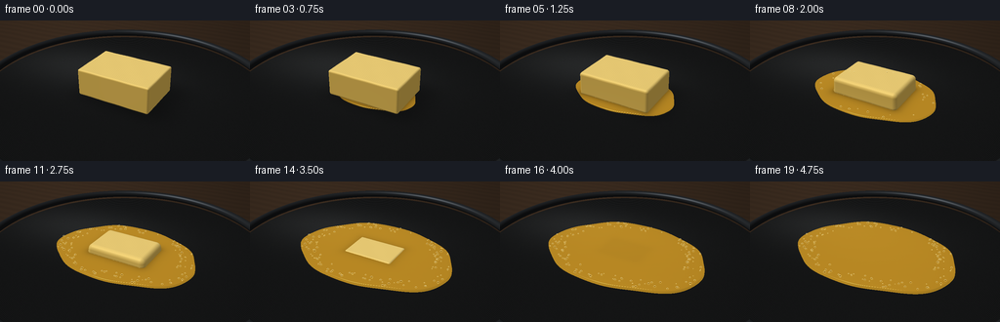
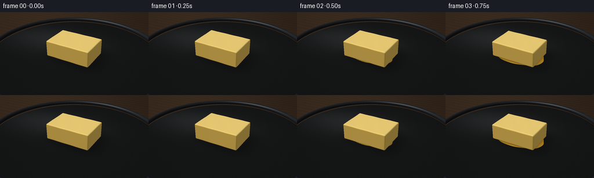

CODING AGENTS AS PIXEL WORLD MODELS
traex/GPT-6.1-Sol · phygen_098
点击播放 · 原生 RGB 像素
逐轮保存的候选
回放视频、检查图与代码变化。
每份候选均可单独播放。实际图片检查记录在下方工具轨迹中。
候选 01播放与检查图
点击播放 · 原生 RGB 像素


展开代码变化
--- 上一保存版本
+++ 本次保存版本
@@ -0,0 +1,272 @@
+"""Procedural, fixed-camera macro timelapse of butter melting in a skillet.
+
+Only analytic geometry, numpy shading, and PIL supersampling are used.
+"""
+from pathlib import Path
+import json
+import numpy as np
+from PIL import Image, ImageDraw, ImageFilter
+import artifact_io
+
+ROOT = Path(__file__).resolve().parent
+SPEC = json.loads((ROOT / 'task_spec.json').read_text())
+W, H = SPEC['width'], SPEC['height']
+SS = 3
+w, h = W * SS, H * SS
+rng = np.random.default_rng(98)
+
+def normalize(a):
+ return a / np.maximum(np.linalg.norm(a, axis=-1, keepdims=True), 1e-9)
+
+def smooth(a, b, x):
+ q = np.clip((x-a)/(b-a), 0, 1)
+ return q*q*(3-2*q)
+
+CAM = np.array([2.65, 4.5, 7.1])
+TARGET = np.array([0., .05, 0.])
+FWD = normalize(TARGET-CAM)
+RIGHT = normalize(np.cross(FWD, [0, 1, 0]))
+UP = np.cross(RIGHT, FWD)
+F = .5*w / np.tan(np.deg2rad(37.5/2))
+xx, yy = np.meshgrid(np.arange(w)+.5, np.arange(h)+.5)
+RAYS = normalize(FWD + ((xx-w/2)/F)[..., None]*RIGHT + ((h/2-yy)/F)[..., None]*UP)
+LIGHT = normalize(np.array([-3.5, 7., 3.5]))
+LIGHT2 = normalize(np.array([4., 3., -2.]))
+ROT = -.16
+cs, sn = np.cos(ROT), np.sin(ROT)
+
+def local(p):
+ q = p.copy()
+ q[..., 0] = cs*p[..., 0] - sn*p[..., 2]
+ q[..., 2] = sn*p[..., 0] + cs*p[..., 2]
+ return q
+
+def project(p):
+ q = np.asarray(p)-CAM
+ z = q @ FWD
+ return np.stack([w/2 + F*(q@RIGHT)/z, h/2-F*(q@UP)/z], axis=-1)
+
+def torus(p):
+ r = np.hypot(p[..., 0], p[..., 2])
+ return np.sqrt((r-3.48)**2 + (p[..., 1]-.155)**2)-.095
+
+def backdrop():
+ # A softly lit, nearly black iron skillet, on an out-of-focus warm worktop.
+ d = RAYS
+ t = (-.24-CAM[1])/d[..., 1]
+ p = CAM+t[..., None]*d
+ wood = 2*np.sin(p[..., 2]*19 + .8*np.sin(p[..., 0]*2))
+ wood += 1.2*np.sin(p[..., 2]*72+np.sin(p[..., 0]*8))
+ bg = np.zeros((h,w,3))+np.array([58.,43.,31.])
+ bg += wood[..., None]*np.array([1., .72, .5])
+ bg *= (.75+.25*np.exp(-((xx-w*.25)**2+(yy-h*.15)**2)/(w*w*.4)))[..., None]
+ plane_t = -CAM[1]/d[..., 1]
+ floor_p = CAM+plane_t[..., None]*d
+ rad = np.hypot(floor_p[..., 0], floor_p[..., 2])
+ valid = rad<3.48
+ # Fine, stationary cast-iron grain, with soft grazing reflections.
+ noise = rng.normal(0, .85, (h,w))
+ lightpatch = np.exp(-((floor_p[..., 0]+1.5)/2.3)**2-((floor_p[..., 2]+.9)/1.2)**2)
+ val = 21. + 18.*lightpatch + noise
+ val += 2*np.sin(rad*210) * np.exp(-((rad-3.1)/.7)**2)
+ iron = np.stack([val*.98, val*1.015, val*1.03], axis=-1)
+ bg[valid] = iron[valid]
+ # Trace the rounded lip once; its thin reflected line establishes the pan.
+ tt = np.full((h,w), 1.0)
+ hit = np.zeros((h,w), bool)
+ for _ in range(105):
+ p = CAM+tt[..., None]*d
+ dist = torus(p)
+ new = (dist<.0008)&(tt<14)&(~hit)
+ hit |= new
+ active = (~hit)&(tt<14)
+ if not np.any(active):
+ break
+ tt[active] += np.maximum(dist[active]*.86, .00045)
+ rim_p = CAM+tt[..., None]*d
+ hit &= (tt<plane_t+.2)
+ r = np.hypot(rim_p[..., 0],rim_p[..., 2])
+ n = np.stack([rim_p[..., 0]*(r-3.48)/np.maximum(r,1e-5), rim_p[..., 1]-.155,
+ rim_p[..., 2]*(r-3.48)/np.maximum(r,1e-5)], -1)
+ n = normalize(n)
+ half = normalize(LIGHT-d)
+ ndl = np.maximum(n@LIGHT,0)
+ spec = np.maximum(np.sum(n*half,-1),0)**35
+ rim = (13+28*ndl+70*spec)[..., None]*np.array([.91,.98,1.05])
+ bg[hit] = rim[hit]
+ return bg, floor_p, valid, plane_t
+
+BACKGROUND, FLOOR_P, FLOOR_VALID, FLOOR_T = backdrop()
+
+def dimensions(t):
+ melt = smooth(.045, .93, t)
+ rest = max(0., 1-melt)
+ height = .66*rest**.82
+ ax = .91*rest**.19
+ az = .61*rest**.19
+ rounding = min(.042+.15*melt, height*.42, ax*.35, az*.4) if rest else 0.
+ return melt, height, ax, az, rounding
+
+def solid_sdf(p, params):
+ melt, height, ax, az, rounding = params
+ if height<.006:
+ return np.full(p.shape[:-1], 100.)
+ q = local(p)
+ # Edges gently slump outwards at the bottom as the pat softens.
+ v = np.clip(q[...,1]/max(height,.01),0,1)
+ bulge = .055*melt*(1-v)**2
+ b = np.stack([ax+bulge-rounding+np.zeros_like(v),
+ np.full_like(v,height/2-rounding), az+bulge-rounding+np.zeros_like(v)], -1)
+ q[...,1] -= height/2+.004
+ # Broad shallow imperfections prevent the surface looking CAD-perfect.
+ q[...,1] += .0023*np.sin(q[...,0]*9.0+.4)*np.sin(q[...,2]*8.0)
+ a = np.abs(q)-b
+ return np.linalg.norm(np.maximum(a,0),axis=-1)+np.minimum(np.max(a,axis=-1),0)-rounding
+
+def liquid_sdf(p, params, t):
+ m = params[0]
+ if m<.001:
+ return np.full(p.shape[:-1],100.)
+ q = local(p)
+ rx = .79+1.19*np.sqrt(m)
+ rz = .52+.91*np.sqrt(m)
+ qx, qz = q[...,0]/rx, q[...,2]/rz
+ angle = np.arctan2(qz,qx)
+ irregular = 1+.025*np.sin(3*angle+.3)+.018*np.sin(5*angle-1)+.009*np.cos(9*angle)
+ rho = np.sqrt(qx*qx+qz*qz)/irregular
+ thickness = .008+.095*m**.65
+ top = .008+thickness*(1-.40*np.clip(rho,0,1)**8)
+ top += .0008*m*np.sin(18*q[...,0]+11*q[...,2]-t*3)*np.sin(14*q[...,2])
+ # Rounded fluid meniscus with a broad, smooth central surface.
+ a = (rho-1)*min(rx,rz)
+ b = p[...,1]-top
+ k = .010
+ corner = np.sqrt(np.maximum(a+k,0)**2+np.maximum(b+k,0)**2) + np.minimum(np.maximum(a+k,b+k),0)-k
+ return np.maximum(corner, .001-p[...,1])
+
+def scene_sdf(p,params,t):
+ return np.minimum(solid_sdf(p,params),liquid_sdf(p,params,t))
+
+def render(t):
+ params = dimensions(t)
+ m, height, ax, az, rounding = params
+ color = BACKGROUND.copy()
+ # A soft contact shadow follows the shrinking solid, on both iron and oil.
+ lp = local(FLOOR_P)
+ sx, sz = ax+.12+height*.25, az+.12+height*.20
+ sh = np.exp(-((lp[...,0]-.17*height)/max(sx,.1))**4-((lp[...,2]+.1*height)/max(sz,.1))**4)
+ color *= (1-.34*sh*(1-m)**.3*FLOOR_VALID)[...,None]
+ flat_d = RAYS.reshape(-1,3)
+ lower = np.array([-2.27, -.018, -1.72])
+ upper = np.array([2.27, .72, 1.72])
+ t0 = (lower-CAM)/flat_d
+ t1 = (upper-CAM)/flat_d
+ near = np.max(np.minimum(t0,t1),axis=1)
+ far = np.min(np.maximum(t0,t1),axis=1)
+ eligible = (far>near)&(far>0)
+ ids = np.flatnonzero(eligible)
+ dirs = flat_d[ids]
+ tt = np.maximum(near[ids],0)
+ end = far[ids]
+ hit = np.zeros(len(ids),bool)
+ for _ in range(155):
+ active = np.flatnonzero((~hit)&(tt<=end))
+ if not len(active):
+ break
+ p = CAM+tt[active,None]*dirs[active]
+ distance = scene_sdf(p,params,t)
+ success = distance<.00045
+ hit[active[success]] = True
+ advance = active[~success]
+ tt[advance] += np.maximum(distance[~success]*.82,.00020)
+ ids = ids[hit]
+ dirs = dirs[hit]
+ p = CAM+tt[hit,None]*dirs
+ if len(ids):
+ solid = solid_sdf(p,params)<liquid_sdf(p,params,t)
+ eps = .0006
+ n = np.stack([scene_sdf(p+np.eye(3)[k]*eps,params,t)-scene_sdf(p-np.eye(3)[k]*eps,params,t) for k in range(3)],-1)
+ n = normalize(n)
+ ndl = np.maximum(n@LIGHT,0)
+ fill = np.maximum(n@LIGHT2,0)
+ up = np.maximum(n[:,1],0)
+ # Creamy opaque butter: pale top, warm golden sides, minute knife marks.
+ q = local(p)
+ grain = .003*np.sin(q[:,0]*144+1.5*np.sin(q[:,2]*21))
+ base = np.tile(np.array([244.,201.,92.]),(len(p),1))
+ base += up[:,None]*np.array([9.,19.,34.])
+ diffuse = .47+.46*ndl+.105*fill
+ butt = base*diffuse[:,None]
+ half = normalize(LIGHT-dirs)
+ nh = np.maximum(np.sum(n*half,axis=1),0)
+ spec_b = nh**45*15 + nh**12*5
+ butt += spec_b[:,None]*np.array([1.,.96,.79])
+ butt += grain[:,None]*600*up[:,None]*(1-m)
+ # The newly liquefied butter is darker, transparent golden-yellow.
+ alpha = .83
+ floor = BACKGROUND.reshape(-1,3)[ids]
+ liquid = floor*(1-alpha)+np.array([206.,151.,36.])*alpha
+ liquid *= (.78+.25*ndl+.12*fill)[:,None]
+ # Soft rectangular window reflection, shaped by the fluid's normal.
+ reflected = dirs-2*np.sum(dirs*n,axis=1)[:,None]*n
+ window = np.exp(-((reflected[:,0]+.29)/.25)**8-((reflected[:,2]-.29)/.27)**8)
+ window *= smooth(.2,.7,reflected[:,1])
+ liquid += window[:,None]*np.array([72.,76.,62.])
+ liquid += (nh**110*85+nh**20*13)[:,None]*np.array([1.,.95,.70])
+ edge = (1-up)**1.5
+ liquid += edge[:,None]*np.array([25.,20.,5.])
+ # Occlusion at the junction of the remaining block and its meltwater.
+ foot = np.exp(-np.maximum(solid_sdf(p+np.array([0,.025,0]),params),0)/.095)
+ liquid *= (1-.29*foot*(1-m)**.4)[:,None]
+ shaded = np.where(solid[:,None],butt,liquid)
+ color.reshape(-1,3)[ids] = shaded
+ return color
+
+# Fixed bubble sites. Moisture starts to fizz only once a substantial pool exists.
+bubble_angles = rng.uniform(0,2*np.pi,150)
+bubble_radial = rng.uniform(.77,.985,150)
+bubble_size = rng.uniform(.010,.032,150)
+bubble_phase = rng.uniform(0,1,150)
+
+def add_bubbles(image,t):
+ m, height, ax, az, r = dimensions(t)
+ if m<.25:
+ return image
+ overlay = Image.new('RGBA',(w,h))
+ draw = ImageDraw.Draw(overlay)
+ rx,rz=.79+1.19*np.sqrt(m),.52+.91*np.sqrt(m)
+ amount = smooth(.25,.8,m)
+ for i,(ang,rad,bs,phase) in enumerate(zip(bubble_angles,bubble_radial,bubble_size,bubble_phase)):
+ if phase>amount:
+ continue
+ life = .65+.35*np.sin(t*17+phase*30)**2
+ rad *= 1+.024*np.sin(ang*3+.3)+.018*np.sin(ang*5-1)
+ x,z = rx*rad*np.cos(ang),rz*rad*np.sin(ang)
+ world = np.array([cs*x+sn*z,.058+.028*m,-sn*x+cs*z])
+ uv = project(world)
+ bx = max(.65,F*bs*life/np.linalg.norm(world-CAM))
+ by = bx*.63
+ # Small amber cavities with a thin creamy reflection, not soap foam.
+ rect = [uv[0]-bx,uv[1]-by,uv[0]+bx,uv[1]+by]
+ draw.ellipse(rect,fill=(137,95,18,110),outline=(255,225,126,175),width=1)
+ draw.arc(rect,195,305,fill=(255,244,188,230),width=1)
+ return Image.alpha_composite(image.convert('RGBA'),overlay).convert('RGB')
+
+def main():
+ frames=[]
+ for i in range(SPEC['frames']):
+ t=i/(SPEC['frames']-1)
+ c=render(t)
+ # Slight lens vignette and a static, very fine photographic grain.
+ vignette=1-.08*((xx-w*.49)**2/(w*.7)**2+(yy-h*.46)**2/(h*1.15)**2)
+ c*=vignette[...,None]
+ image=Image.fromarray(np.clip(c,0,255).astype(np.uint8),'RGB')
+ image=add_bubbles(image,t)
+ image=image.resize((W,H),Image.Resampling.LANCZOS)
+ frames.append(np.array(image))
+ print(f'Frame {i+1}/{SPEC["frames"]}',flush=True)
+ artifact_io.save(np.stack(frames),ROOT)
+ print('Saved RGB frames, pixels.npz, and index.html',flush=True)
+
+if __name__=='__main__':
+ main()
可观测工具轨迹
实际执行的命令与返回图片。
命令 1exit 0
/bin/bash -lc 'ls -la && cat prompt.txt && cat GENERATION_RULES.md && cat task_spec.json'
命令 2exit 1
/bin/bash -lc "cat artifact_io.py && which ffmpeg && python - <<'PY' import numpy, PIL print(numpy.__version__) PY"
命令 3exit 0
/bin/bash -lc 'OPENBLAS_NUM_THREADS=1 python generate.py'
命令 4exit 0
/bin/bash -lc "python - <<'PY'
from pathlib import Path
import numpy as np
from PIL import Image
root=Path('.')
a=np.load('pixels.npz')['pixels']
assert a.shape==(144,256,20)
files=sorted((root/'frames').glob('*.png'))
assert len(files)==20
f=np.stack([np.array(Image.open(p)) for p in files])
assert f.shape==(20,144,256,3) and f.dtype==np.uint8
print('Validated: 20 RGB frames, 256Ã144, 4 fps / 5 seconds.')
print('Per-frame mean RGB:',np.round(f.mean(axis=(1,2)),1).tolist())
print('Output:', [(p.name,p.stat().st_size) for p in [root/'pixels.npz',root/'index.html',root/'inspection.png',root/'generate.py']])
PY"保存候选 1 份；完成命令 4 次；可验证图片返回 0 张。原始 API 响应与完整日志保留在本地。